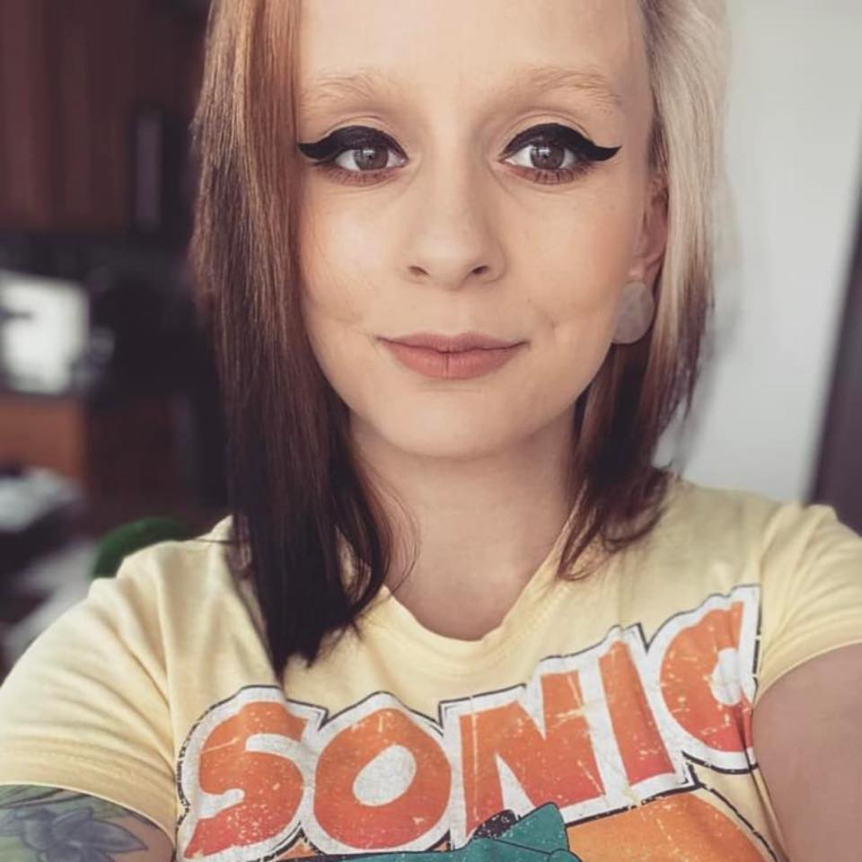

Megan Gorham was born and raised in Salisbury, Maryland. She is married and a mother to a 4-year-old daughter and a 3-month-old Son. Growing up, she was a huge fan of Japanese culture, specifically anime and manga. She had many pen pals in Japan that she would exchange letters and collectible items with while also learning about Japanese customs. Her family has had a long history of seamstresses, knitters, and crocheters, so she was expertly taught at a young age on how to do multiple styles of knitting and crochet. This started a love affair that combined her appreciation of Japanese culture with her love for creating things through crochet. This hobby eventually turned into a passion of creating high quality, hand-made, amigurumi dolls.
Amigurumi is the Japanese word which describes small knitted or crocheted stuffed toys, often in the shape of characters, animals, mini foods, household objects and scenery. It comes from the two root words ami, meaning crocheted or knitted, and nuigurumi, which means stuffed doll. Since their inception, these handmade toys have become synonymous with the whimsical subculture many already associate with Japan, a movement which has spawned thousands of imaginative works. Megan’s dolls are inspired by characters in Japanese anime, Pokémon, Star Wars, Disney movies, and much more. She has been making amigurumi dolls for friends and family for years and has now expanded to sell on sites like Etsy, Ebay, and Facebook Marketplace as well as attending local fairs on the Eastern Shore of Maryland, Virginia, and Delaware.
Her goal is to continue making dolls while also expanding to instructional YouTube videos and selling her custom, high quality patterns so that others can enjoy her designs.
Thanks for visiting!
Contact me at:
MeganGorham073@gmail.com
Latest Updates:
Megan will be at the Eastern Shore Fair in Salisbury on December 5, 2022!
Her Latest Creation:

Please refer to my disclaimers page for all licensing and legal information. All images are copyright of Megan Gorham. 2022.